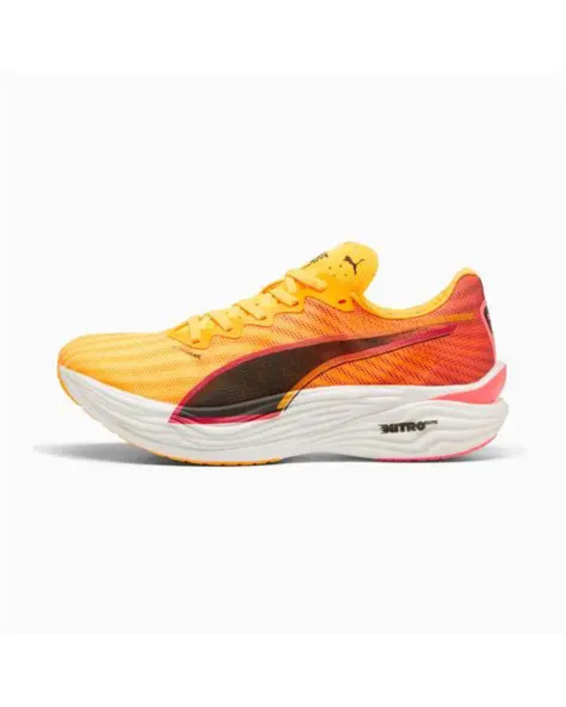

PUMA Deviate NITRO Elite 3 (DNE3)は、規格上限の40mmスタックと195gの驚異的な軽量性を両立し、V2から大刷新を遂げたPUMAのフラッグシップレーシング。各メーカーの中でも随一の柔らかさをほこるNITOROFORMに,各メーカーの中でももっと硬いと言われるPWRPLATEをいれたレースシューズである。この爆発的なコンビネーションにより、主に5kmからハーフマラソンで、ランナーを新たなスピード領域へと導く。
カテゴリ: PUMAのフラッグシップ・レーシングシューズ（スーパーシューズ）。用途: 主に5kmからハーフマラソンの高速レースに特化。スタック高: 40mm（国際競技連盟の規定上限を最大化）。重量: 195g（US M9）という極めて軽量な設計。ミッドソール: 最新のA-TPUベースのNITROFOAM™ ELITEを採用。高いエネルギーリターン（77.1%）と耐久性が期待される。カーボンプレート: メーカーで最もアグレッシブとされる極めて硬質なフルレングスPWRPLATEを搭載。ライド感: 低速時は硬いが、ペースを上げると爆発的な推進力とバウンスを生むスピード特化型。アッパー: 軽量で確実なロックダウンを実現するULTRAWEAVE素材を使用。アウトソール: 全天候型で卓越したグリップ力を提供するPUMAGRIPを採用。懸念点: 初期のロットでアウトソール剥離の品質問題が報告されている。フィット: 中足部が非常に狭く、幅広の足には不向きな設計。 $230.00〜195g⭐ 総合: 未評価/5🏃 走り心地: 未評価/5💎 デザイン: 未評価/5💰 コスパ: 未評価/5 価格未設定195g（US$230.00〜195g⭐ 総合: 未評価/5🏃 走り心地: 未評価/5💎 デザイン: 未評価/5💰 コスパ: 未評価/5
このシューズの設計思想はシンプルで、それは、「軽量性」と「爆発的な推進力」を限界まで高めること。PUMAは、超軽量で異例な柔らかさを持つフォーム（NITRO ELITE）を採用することで、プレートの硬さを全面におしだして爆発的推進力を生み出している。柔らかすぎる高スタックシューズが抱える安定性の不安を、この硬質なプレートが構造的に制御する仕組み。プレートはつま先の先まであることでてこの動きをうみだしてより高速なペースまで対応できるようになっている。この組み合わせこそが、硬いのに速いというDNE3独自の、他に類を見ない爆発的なライド感を生み出す核である。
DNE3の第一印象は「走れるスパイク」だ。そのライド感は生半可ではない。低速域では、極めて剛性の高いカーボンプレートが牙を剥く。足裏に硬質な石板を当てられているような強烈な圧迫感で、シューズから「もっと速く走れ」と試されている気分になる。でも、閾値を超えた瞬間、この硬質さは一変する。ペースが上がればプレートを曲げられるようになるので心地良い反発を感じる。他のシューズのように前足部を潰すような形で前に進んでいく感じではないのでフルマラソンで使うには勇気と実力が必要。アッパーのULTRAWEAVEは、まるで第二の皮膚のように快適かつ強固に足を包み込み、中足部を完璧にロックダウンする。普通のレースシューズはグリップは弱めのことがおおいけどこいつは強い！心配なのはニュートラル設計で硬いので、接地がきれいじゃないと怪我リスクは高いこと。グリップのお陰で総合点は高いけど市民ランナーの方にはおすすめできない。
・卓越したグリップ力: アウトソールのPUMAGRIPは、乾燥路面はもちろん、濡れた路面やカーブでも性能を損なわない、全天候型の高いトラクションを発揮。高速走行への最適化: 極めて硬質なカーボンプレートが、閾値以上のペースで最高の推進力を生み出す、スピード特化型のパフォーマンス。耐久性への期待: スーパーフォームとして実績のあるA-TPU素材の使用により、競合製品と比較して平均以上のミッドソール寿命が期待できる。
極端なプレート剛性: 極めて硬いカーボンプレート（PWRPLATE）により、低速走行時（ジョグなど）に足裏に強い不快感やストレスを感じさせやすい。日常のトレーニングには不向き。ピーキーな性能: 高速走行に極度に特化しているため、ランニングフォームやペースが定まらないランナーには、プレートの硬さが扱いにくいと感じられる可能性がある。
比較対象のシューズとの違いや特徴を入力してください。
Puma Deviate NITRO Elite 3は、40mmのスタックと195gの超軽量ボディ、そして極めて硬質なカーボンプレートを特徴とする、市場で最もアグレッシブなスーパーシューズの一つです。A-TPUフォームの爆発的なバウンスと、高速走行時の推進力は高く評価されていますが、低速ランナーや足幅の広いランナーには適していません。アウトソールの初期品質問題は懸念点ですが、高速レースでのパフォーマンスはトップクラスです。 ⭐ 総合: 未評価/5🏃 走り心地: 未評価/5💎 デザイン: 未評価/5💰 コスパ: 未評価/5 こんな人におすすめ 体重が重めのランナーでスピードを求める方に最もおすすめ。足幅が狭くて他社の製品が合わない方も一度ためしてみてほしい。 こんな人におすすめ 体重が重めのランナーでスピードを求める方に最もおすすめ。足幅が狭くて他社の製品が合わない方も一度ためしてみてほしい。 こんな人におすすめ
体重が重めのランナーでスピードを求める方に最もおすすめ。足幅が狭くて他社の製品が合わない方も一度ためしてみてほしい。
体重が重めのランナーでスピードを求める方に最もおすすめ。足幅が狭くて他社の製品が合わない方も一度ためしてみてほしい。